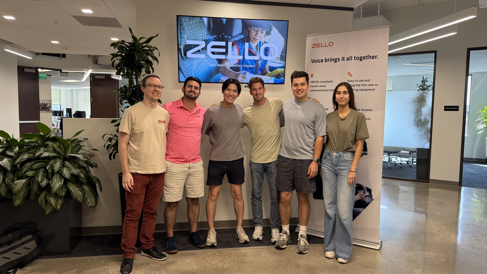

Zello Data & Analytics Intern
Experience Summary
During Summer 2025, I worked with the Data & Analytics organization at Zello, a software company whose push-to-talk platform supports frontline teams in construction, logistics, and public safety. My internship combined applied machine learning, analytics engineering, and workflow automation.

LLM Conversation Disentanglement
Zello's AI Insights feature summarizes long streams of voice and text messages. A key prerequisite for useful summaries is conversation disentanglement: assigning interleaved messages to coherent threads before downstream summarization and key-information extraction. I designed and evaluated an LLM-based pipeline for assigning conversation IDs to construction-site communications.
- Data and privacy: created a synthetic dataset from real conversation patterns while anonymizing content, enabling safer iteration and reproducible evaluation.
- Modeling: implemented a windowed prompting strategy with consistency checks across overlapping spans.
- Post-processing: used simple graph-based merging to combine fragmented thread assignments.
- Evaluation: used Adjusted Rand Index as the primary metric, improving performance from 0.31 to 0.92 on the synthetic test set.
Analytics Engineering with dbt
I contributed to Zello's analytics stack by building and hardening dbt models used for product analytics and business reporting. This work focused on making data models reliable, documented, and easier to reuse as upstream schemas and business questions changed. I also created KPI tracking dashboards in Mode and Omni to monitor go-to-market activity, including the number of interactions with potential customers and where each account or prospect sat in the marketing funnel.
- Built source models with tests and documentation.
- Developed intermediate marts for feature usage and account-level health.
- Supported final models consumed by downstream dashboards and reporting workflows.
- Practiced dbt conventions around naming, sources, tests, freshness, incremental strategies, snapshotting, and dependency management.
Operational Automation
To streamline go-to-market workflows, I built an automated message pipeline connecting HubSpot, LLM enrichment, and Slack through Pipedream. The pipeline summarized calls, emails, and meetings, extracted customer-behavior signals such as adoption blockers and feature interest, and posted actionable notes to the relevant Slack channels. This reduced manual transcription and improved the feedback loop between Customer Success and Product.
Skills Developed
- Technical: prompt engineering, LLM evaluation, conversation clustering, experiment design, SQL, data warehousing, dbt modeling, API integration, and event-driven automation.
- Statistical: metric selection, validation under distribution shift, reproducible evaluation, and bias-variance trade-offs in prompt and pipeline design.
- Professional: cross-functional collaboration with Product Analytics and GTM teams, technical documentation, stakeholder iteration, and MVP scoping.